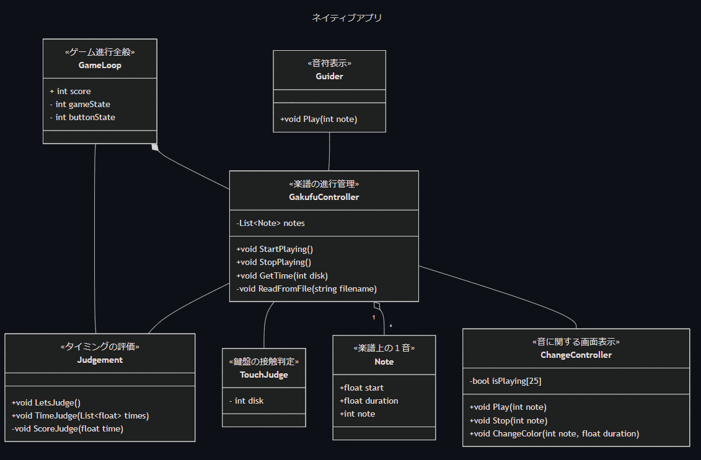

1. プロジェクト概要
歴史的に失われた楽器「グラスハーモニカ（アルモニカ）」を体験できるプロジェクトです。
VR技術を活用し、楽器の演奏体験をデジタル空間で再現しています。このプロジェクトでは、技術とアートの融合による新たな価値創造を目指しています。
プロジェクト紹介動画を見る2. グラスハーモニカとは？

グラスハーモニカは18世紀ヨーロッパで人気を博したガラス製の楽器です。ベンジャミン・フランクリンによって1761年に発明され、○○や○○など多くの著名な作曲家がこの楽器のための作品を残しています。
回転するガラスの円盤に濡れた指で触れることで、透明感のある幻想的な音色を奏でます。その美しい音色は「天使の声」とも称されました。
現在、日本国内にはわずか3台しか現存していません。実物に触れる機会はほとんどなく、その演奏技術や音色の継承が課題となっています。
3. プロジェクトの取り組み
本プロジェクトでは、学生主体で楽器の構造や音色を徹底調査し、3Dモデリングやサウンドサンプリングを駆使して、VR空間での演奏体験システムを開発しました。
世界的なバーチャルイベント「Laval Virtual」などで高い評価を獲得しています。
システム図
本プロジェクトは、次のようなシステムです。私は、赤枠内の「Native App」のシステムを開発しました。

「Native App」のクラス図
「Native App」は、次のようなクラスからできています。
私は、赤枠内の6つのクラス(GameLoop)を開発しました。
- GameLoop
- GakufuController
- Judgement
- TouchJudge
- Guider
- ChangeController
このクラスは、「待機、開始、演奏、結果」、この一連の体験を繰り返します。
このクラスは、主に楽譜の進行を管理します。また、次のつの機能を持ちます。 1.楽譜ファイルを読み込み機能
このクラスは、GakufuControllerから送られた、弾いたタイミングを評価します。
このクラスは、触れた鍵盤をGakufuContorllerに送ります。
このクラスは、GakufuContorllerから送られた1音を表示します。
このクラスは、GakufuContorllerから送られた鍵盤を光らせます。
4. 演奏体験のシステム開発
私たちのプロジェクトで特に注力したのは、初心者でもグラスハーモニカの演奏を体験できる「演奏ガイドシステム」の開発です。このシステムはC#で開発され、VR空間内で「ここに触れて、演奏をしてください」と視覚的にガイドします。
システムの特徴
- 触れるべき場所を視覚的にハイライト表示
- 正しい触れ方をリアルタイムにフィードバック
- 熟練度に応じたガイダンスレベルの調整
- 演奏の記録と分析機能
技術的実装
Unity上でC#を使用して開発されたこのシステムは、以下の要素で構成されています。
5. 成果と評価
2024年、「Laval Virtual」世界大会でベスト11に選出されるなど、高い評価を得ています。実物に触れられない希少楽器の音や演奏体験を多くの人に提供することに成功しました。
文化遺産のデジタル継承や音楽教育の新たな可能性を提示しています。
6. 今後の展望
私たちのプロジェクトは、さらなる発展を目指しています：
他の「失われた楽器」への応用や、教育・博物館分野への展開を計画中です。
テクノロジーとアートの融合による新しい価値創造を継続的に追求していきます。また、オープンソースとしてのプロジェクト公開も検討中で、より多くの人々が歴史的楽器との出会いを体験できる機会を創出していきます。
7. まとめ
多摩大学の「失われた楽器」プロジェクトは、歴史的文化財のデジタル復元と体験を通じて、音楽とテクノロジーの未来を切り拓く取り組みです。
演奏ガイドシステムの開発により、専門知識がなくても誰でも失われつつある楽器文化を体験できる可能性を広げています。これからも技術革新と文化保存の両面から、新たな価値の創造に挑戦していきます。